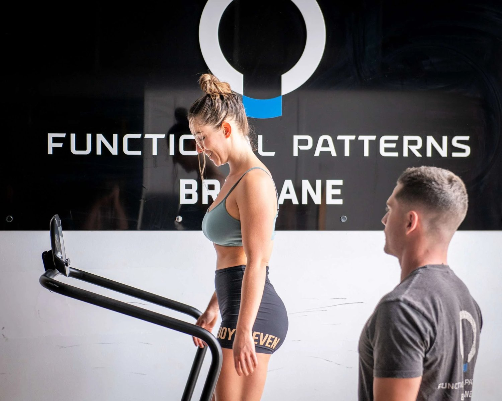

Understanding Back Pain: Why It Keeps Coming Back
If you’ve searched:
-
why does my back hurt
-
what causes back spasms
-
upper back pain
-
aching back hips
-
who to see for back pain
You’ve probably been told to stretch it, strengthen your core, or rest.
And yet — your back pain keeps returning.
That’s because most back pain is not a back problem.
It’s a movement problem.
What Is Back Pain?
Back pain is rarely structural damage.
More often, it is:
-
Overload
-
Poor force transfer
-
Compensatory muscle tension
-
Protective spasm
Your spine is designed to transfer force between your hips and ribcage.
When that system breaks down, the back absorbs stress it was never meant to handle.

What Causes Back Pain?
Gait & Movement Dysfunction
Your body takes thousands of steps per day.
If your gait is asymmetrical:
-
One side loads more
-
Pelvis rotates unevenly
-
Spine compensates
Over time, that creates:
-
Back spasms lower back
-
Aching back hips
-
Muscle knots in back
Back pain is often repetitive stress from inefficient walking mechanics.
Postural Problems
If your pelvis is tilted…
If your ribcage is flared…
If your spine is constantly extended or flexed…
Your back is working overtime just to keep you upright.
Posture correction isn’t about standing straight.
It’s about restoring neutral load distribution.
Restricted Hip Rotation
Many cases of:
-
Middle back problems
-
Upper right back discomfort
-
“Back nerve trapped” sensations
Are consequences of limited hip internal rotation.
If the hips can’t rotate, the spine must.
And the spine isn’t built for repetitive rotation under load.

What Is A Back Spasm?
A back spasm is protective muscle contraction.
It is your nervous system saying:
“This area is overloaded.”
They feel sharp, gripping, locking.
They are rarely random.
They are mechanical.
Treating the spasm without addressing load distribution is like turning off a smoke alarm without putting out the fire.
Upper, Middle & Lower Back Pain — Why Location Isn’t the Root Cause
Upper back pain often relates to:
-
Ribcage rigidity
-
Poor scapular mechanics
Middle back problems often relate to:
-
Thoracic immobility
-
Rotational imbalance
Lower back pain often relates to:
-
Pelvic instability
-
Gait asymmetry
The common denominator?
Force isn’t being transferred efficiently.
Is Walking Good For Back Problems?
Yes — if your gait is efficient.
No — if your walking reinforces asymmetry.
Walking can either decompress the spine or irritate it.
Mechanics determine which.

The Role of Gait Analysis in Back Pain
At FP Brisbane, we assess:
-
Pelvic rotation timing
-
Hip internal rotation capacity
-
Arm swing symmetry
-
Ribcage positioning
-
Load transfer patterns
Back pain rarely originates where it hurts.
It originates where load is mismanaged.
Posture Correction Techniques That Actually Work
Effective posture correction includes:
-
Restoring hip rotation
-
Rebalancing pelvic orientation
-
Improving thoracic mobility
-
Integrating contralateral movement patterns
Not just core strengthening exercises.
Core strength without coordination increases compression.
Functional Movement Assessments
If you have chronic back pain, ask:
-
Do I rotate symmetrically?
-
Can my hips absorb force?
-
Is my ribcage mobile?
-
Is my gait balanced?
A functional movement assessment identifies:
-
Compensation patterns
-
Asymmetrical load
-
Instability drivers
Chronic Back Pain Therapy — A Systems Approach
Chronic back pain improves when:
-
The pelvis stabilises
-
The hips rotate efficiently
-
The ribcage moves
-
Gait becomes symmetrical
Not because we stretched the back.
Because we removed mechanical overload.
Back Pain Treatment in Brisbane
If your back pain keeps returning despite stretching, massage, core workouts or braces — it’s time to look at the system.
At Functional Patterns Brisbane, we assess gait, posture and load distribution to identify why your spine is overloaded.
If you’re in Brisbane and ready to address the root cause, book a posture and gait assessment today.